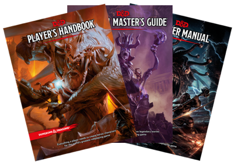
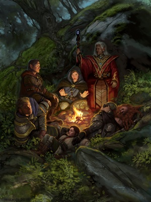

We are getting a group together to play Dungeons & Dragons in both
English and Japanese. You only need to be able to speak one of these
languages to join, and no D&D experience is required either—all
you need is a desire to have fun and a thirst for adventure!
We're thinking of getting together once or twice a month in the South Bay
/ Campbell (CA) area, with precise location and schedule to be decided
once we have a group and can figure out what works for all of us. If you
are interested, please contact Dani at dnd@dpwright.com.

What is Dungeons & Dragons?
Originally published in 1974, Dungeons & Dragons is probably the
world's best-known and most popular tabletop role-playing game. In it,
you take the role of a hero in a high-fantasy setting: raiding dungeons,
defeating monsters, and rescuing civilians. It has recently had a
resurgence in popularity, no doubt in part because of its role in the
popular Netflix drama "Stranger Things".
Unlike role-playing videogames, the action in tabletop RPGs takes place
in the minds of the group playing. The story is led by the Dungeon
Master (DM), who sets the scene, controls the enemies' movements, and
creates the world which the players inhabit. The players each control a
hero in this world, which might be a chivalrous knight, a powerful
wizard, a cunning rogue, or almost anything they can imagine!
Can you really play D&D in two languages?!

It takes a little bit of patience, but it actually works out surprisingly
well! In general, we find it works best when there is a good balance of
English-speaking and Japanese-speaking players in the group. The DM
needs to be able to speak both languages reasonably well, and needs to be
conscious of the needs of the group so they can stop play occasionally to
make sure everyone is keeping up.
This might sound a little onerous, but in my experience it's no worse
than having to pause to look something up in the rulebook, or dealing
with a party which has temporarily split up and handling the resulting
multiple threads of story. All in a day's work for the average DM!
If you are studying Japanese (or perhaps you are Japanese and want to
work on your English) and you're looking for a way to meet people and to
practise in a friendly, low-pressure environment, this is a great way to
do just that!
Who's in this group?
So far we have two people: me, a native English speaker from England
who's been playing D&D since I was 11, and my wife, a native Japanese
speaker who's played a few times with a Japanese group we had in Japan
and a couple of times bilingually since then. I'm planning on DMing, so
with my wife as one of the players we'd be looking for 3-4 more people to
fill out the party.
English version by Dani
Any other questions
Drop us an email! We're still
looking for people and figuring out what will work best for everyone, so
we're pretty flexible.